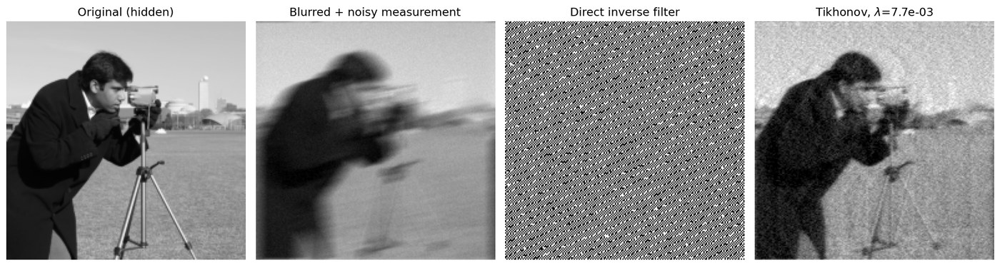
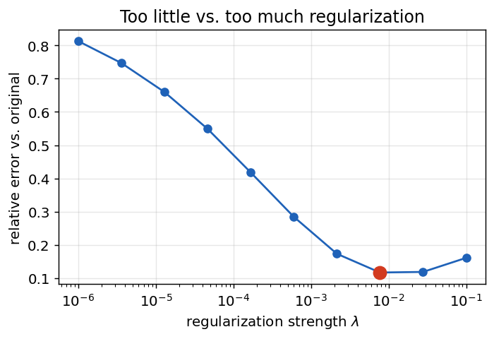

Undoing
Motion Blur.
Motion blur modeled as convolution with a point-spread function. The direct inverse amplifies noise into static, while Fourier-domain Tikhonov regularization recovers the image; a no-reference score also identifies the unknown blur direction.
HeadlinePSNR 20.7 → 23.3 dB with Tikhonov regularization · direct inverse collapses to 4.8 dB · true blur angle found without the original
- Course
- EE 66, Signals, Dynamics & Information
- Lab
- Lab 4: Image Deconvolution
- Timeline
- Week 10, Fall 2026
- Topics
- 2D convolution, Fourier domain, regularization
Overview
Undoing motion blur in a photo. A camera shake is modeled as a convolution of the sharp image with a point-spread function (PSF), plus sensor noise. The goal is to recover the sharp image from the blurry one, and to see why the obvious inverse fails badly while a regularized one works.
Approach
- Blur is a linear system. Convolution with the PSF is a matrix H acting on the flattened image, so blurring is y = Hx + noise. The singular values of H show what blur preserves and what it nearly erases.
- Work in the frequency domain. The 2D FFT turns convolution into multiplication at each spatial frequency, Y = H·X + N, so each frequency can be handled separately.
- Try the direct inverse. Dividing by H undoes the blur exactly in a noiseless world. Here |H| drops to about 10−6 at some frequencies, so the small amount of noise at those frequencies gets amplified roughly a million times.
- Regularize instead. Tikhonov (ridge) regularization adds λ to the denominator, trading a little sharpness for stability. I swept λ over five orders of magnitude and picked the value with the lowest error.
- Handle an unknown blur. When the true blur direction isn't known, try several candidate PSFs and score each reconstruction without the original image: how well it reproduces the measurement, plus a penalty for roughness.
Tikhonov: x̂ = argmin ‖Hx − y‖² + λ‖x‖² → X̂[k,ℓ] = H̅[k,ℓ] · Y[k,ℓ] / (|H[k,ℓ]|² + λ)
Results
| Image | PSNR vs. original | Relative error |
|---|---|---|
| Blurred, noisy measurement | 20.7 dB | 15.9% |
| Direct inverse filter | 4.8 dB | — (pure noise) |
| Tikhonov, best λ ≈ 7.7×10−3 | 23.3 dB | 11.7% |
With the blur direction unknown, the no-reference scoring rule picked the correct angle (12°) out of five candidates without ever seeing the original image.


What I learned
- Inverse problems can be ill-posed even when the math is exact. The direct inverse is the correct formula, and still the worst result here, because it divides by numbers near zero.
- Regularization is a deliberate trade-off. One parameter, λ, decides how much to trust the data versus how much to prefer a stable answer. The error curve has a clear sweet spot between the two failure modes.
- The frequency domain makes a huge problem small. The image-sized matrix problem becomes one division per frequency, solved with two FFTs.
- You can pick a model without the answer key. Checking whether a reconstruction re-blurs into the measurement, and penalizing noise, was enough to find the true blur direction.